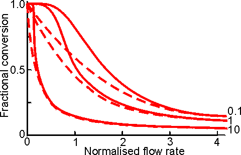

|
|
Continuous flow stirred tank reactorsThis reactor consists of a well -stirred tank containing the enzyme, which is normally immobilised. The substrate stream is continuously pumped into the reactor at the same time as the product stream is removed. If the reactor is behaving in an ideal manner, there is total back-mixing and the product stream is identical with the liquid phase within the reactor and invariant with respect to time. Some molecules of substrate may be removed rapidly from the reactor, whereas others may remain for substantial periods. The distribution of residence times for molecules in the substrate stream is shown in Figure 5.4. The CSTR is an easily constructed, versatile and cheap reactor, which allows simple catalyst charging and replacement. Its well -mixed nature permits straightforward control over the temperature and pH of the reaction and the supply or removal of gases. CSTRs tend to be rather large as the: need to be efficiently mixed. Their volumes are usually about five to ten time the volume of the contained immobilised enzyme. This, however, has the advantage that there is very little resistance to the flow of the substrate stream, which may contain colloidal or insoluble substrates, so long as the insoluble particles are not able to sweep the immobilised enzyme from the reactor. The mechanical nature of the stirring limits the supports for the immobilised enzymes to materials which do not easily disintegrate to give 'fines' which may enter the product stream. However, fairly small particle (down to about 10 mm diameter) may be used, if they are sufficiently dense to stay within the reactor. This minimises problems due to diffusional resistance. An ideal CSTR has complete back -mixing resulting in a minimisation of the substrate concentration, and a maximisation of the product concentration, relative to the final conversion, at every point within the reactor the effectiveness factor being uniform throughout. Thus, CSTRs are the preferred reactors, everything else being equal, for processes involving substrate inhibition or product activation. They are also useful where the substrate stream contains an enzyme inhibitor, as it is diluted within the reactor. This effect is most noticeable if the inhibitor concentration is greater than the inhibition constant and [S]0/Km is low for competitive inhibition or high for uncompetitive inhibition, when the inhibitor dilution has more effect than the substrate dilution. Deviations from ideal CSTR behaviour occur when there is a less effective mixing regime and may generally be overcome by increasing the stirrer speed, decreasing the solution viscosity or biocatalyst concentration or by more effective reactor baffling. The rate of reaction within a CSTR can be derived from a simple mass balance to be the flow rate (F) times the difference in substrate concentration between the reactor inlet and outlet. Hence: (5.7) Therefore: (5.8) from equation (5.4): (5.9) Therefore: This equation should be compared with that for the PBR (equation (5.6)). Together these equations can be used for comparing the productivities of the two reactors (Figures 5.5 and 5.6). Figure 5.4. The residence time distribution
of a CSTR. The relative number of molecules resident within the reactor for a
particular time N, is plotted against the normalised residence time (i.e., tF/V,
where V is the reactor volume, and F is the flow rate; it is the time relative
to that required for one reactor volume to pass through the reactor). The
residence time distribution of non -reacting media molecules ( ----------- which
obeys the relationship
, where [M] is the
concentration of media molecules, giving a half-life for remaining in the
reactor of, product (———
) and substrate (·········)
are shown. The reaction S  Figure 5.5. Comparison of the changes in fractional conversion with flow rate between the PBR (———) and CSTR (-----------) at different values of [S]0/Km (10,1 and 0.1, higher [S]0/Km giving the higher curves). The flow rate is normalised with respect to the reactor's volumetric enzyme content ( = FKm/Vmax. It can be seen that there is little difference between the two reactors at faster flow rates and lower conversions, especially at high values of [S]0/Km. Figure 5.6. Comparison of the changes in fractional conversion with residence time between the PBR (———) and CSTR (-----------) at different values of [S]0/Km (10, 1 and 0.1; higher [S]0/Km values giving the lower curves). The residence time is the reciprocal of the normalised flow rate (see Figure 5.5). If the flow rate is unchanged then the 'normalised residence time' may be thought of as the reactor volume needed to produce the required degree of conversion. Equations describing the behaviour of CSTRs and PBRs utilising reversible reactions or undergoing product or substrate inhibition can be derived in a similar manner, using equations (1.68), (1.85) and (1.96) rather than (1.8): Substrate -inhibited PBR: (5.11) Substrate -inhibited CSTR: (5.12) Product -inhibited PBR: (5.13) Product -inhibited CSTR: (5.14) Reversible reaction in a PBR: (5.15) Reversible reaction in a CSTR: (5.16) X in equations (5.15) and (5.16) is the fractional conversion for a reversible reaction. (5.17) The meaning of other symbols used in equations (5.11)-(5.17) are given Chapter 1. These equations may be used to compare the size of PBR and CSTR necessary to achieve the same conversion under various conditions (Figure 5.7). Another useful parameter for comparing these reactors is the productivity. This can be derived for each reactor assuming a first-order inactivation of the enzyme (equation (1.26)). Combined with equation (5.6) for PBR, or (5.10) for CSTR, the following relationships are obtained on integration: PBR: (5.18)
CSTR: (5.19) where kd is the first -order inactivation constant (i.e., kd1, in equation (1.25)) and the fractional conversion subscripts refer to time = 0 or t. The change in productivity (Figure 5.8) and fractional conversion (Figure 5.9) of these reactors with time can be compared using these equations. These reactors may be operated for considerably longer periods than that determined by the inactivation of their contained immobilised enzyme, particularly if they are capable of high conversion at low substrate concentrations (Figure 5.9). This is independent of any enzyme stabilisation and is simply due to such reactors initially containing large amounts of redundant enzyme.
Figure 5.7. Comparison of the ratio, of the enzyme content in a CSTR to that in a PBR, necessary to achieve various degrees of conversion for a range of process conditions. The actual size of the CSTR will be five to ten times greater than indicated due to the necessity of maintaining stirring within the vessel. ———Uninhibited reaction; ············ product inhibited; ---------substrate inhibited. (curve a) [S]0/Km = 100; (curve b) [S]0/Km = 1; (curve c) [S]0/Km < 0.01; (curve d) [S]0/Km = 1, product inhibited KP/Km = 0.1; (curve e) [S]0/Km = 1, product inhibited KP/Km = 0.01; (curve f) [S]0/Km = 1, substrate inhibited [S]0/KS = 10; (curve g) [S]0/Km = 100; substrate inhibited [S]0/KS = 10. The size of a CSTR becomes prohibitively large at high conversions (e.g., using curve b, a CSTR contains three times the enzyme in a PBR to achieve a 90% conversion, but this increases to 18 times for 99% conversion. The difference between the two types of reactor is increased if the effectiveness factor (h) is less than one due to diffusional effects.
Figure 5.8. The change in productivity of a PBR (---------) and CSTR (———) with time, assuming an initial fractional conversion (X0) = 0.99 and [S]0/Km = 100. The units of time are half -lives of the free enzyme ( ) and the productivity is given in terms of (FXt1/2). Although the overall productivity is 1.6 times greater for a CSTR than a PBR, it should be noted that the CSTR contains 1.9 times more enzyme. In general, there is little or no back -pressure to increased flow rate through the CSTR. Such reactors may be started up as batch reactors until the required degree of conversion is reached, when the process may be made continuous. CSTRs are not generally used in processes involving high conversions but a train of CSTRs may approach the PBR performance. This train may be a number (greater than three) of reactors connected in series or a single vessel divided into compartments, in order to minimise back-mixing CSTRs may be used with soluble rather than immobilised enzyme if an ultrafiltration membrane is used to separate the reactor output stream from the reactor contents. This causes a number of process difficulties, including concentration polarization or inactivation of the enzyme on the membrane but may be preferable in order to achieve a combined reaction and separation process or where a suitable immobilised enzyme is not readily available. Figure 5.9. The change in fractional conversion of PBRs and CSTRs with time, assuming initial fractional conversion (X0) of 0.99 or 0.80. ————CSTR, [S]o/Km = 0.01; - - - - - - CSTR, [S]0/Km = 100; ············ PBR [S]0/Km = 0.01; ·-·-·-·-·-·-·-· PBR [S]0/Km = 100. The time is given in terms of the half -life of the free enzyme (). Although the CSTR maintains its fractional conversion for a longer period than the PBR, particularly at high X0. It should be noted that a CSTR capable of X0 = 0.99 at a substrate feed concentration of [S]0/Km = 0.01 contains 22 times more enzyme than an equivalent PBR, but yields only 2.2 times more product. The initial stability in the fractional conversion over a considerable period of time, due to the enzyme redundancy, should not be confused with any effect due to stabilisation of the immobilised enzyme.
This page was established in 2004 and last updated by Martin
Chaplin |